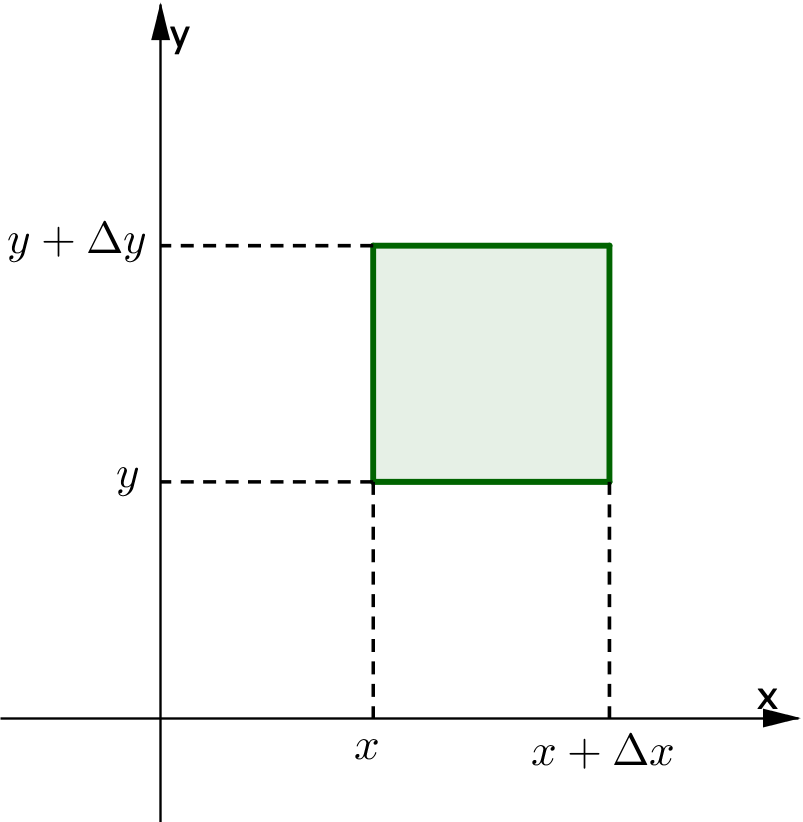
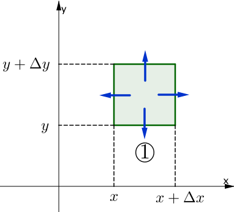
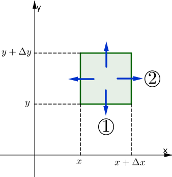
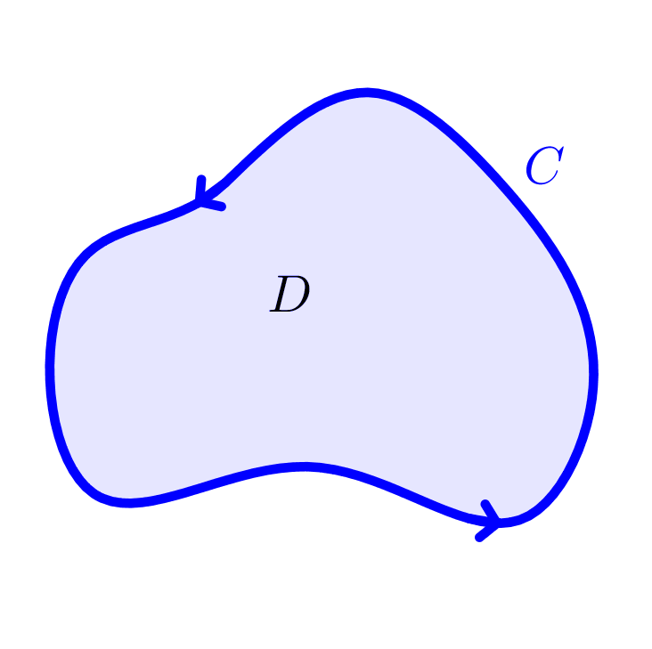

Calculus &
Linear Algebra II
Chapter 39
39 Divergence of a vector field (div)
By the end of this section, you should be able to answer the following questions:
- How do you calculate the divergence of a given vector field?
- What is the significance of divergence?
- How does it relate to flux?
39.1 Calculating divergence
Let \[ \v\left(x,y,z\right)= v_1\left(x,y,z\right)\i+ v_2\left(x,y,z\right)\j+v_3\left(x,y,z\right)\k \] be a differentiable vector function. Then the function \[ \div \v = \frac{\partial v_1}{\partial x}+\frac{\partial v_2}{\partial y}+\frac{\partial v_3}{\partial z}= \nabla \pd \v \] is called the divergence of $\v$. Note that $\div\v$ is a scalar quantity.
39.1 Calculating divergence
Divergence has an analogous definition in two dimensions.
For
$ \F\left(x,y\right) = F_1\left(x,y\right)\i+ F_2\left(x,y\right)\j $,
$\Rightarrow\;\; \div \F = \dfrac{\partial F_1}{\partial x}\left(x,y\right)+ \dfrac{\partial F_2}{\partial y}\left(x,y\right). $
39.1.1 Example: $\v = xy^2~\i + xyz~\j + yz^2~\k$. Find $\div \v$.
| $\div \v$ | $=\nabla \pd \v$ |
| $\displaystyle =\frac{\partial}{\partial x}\left(x y^2\right)+ \frac{\partial}{\partial y}\left(x y z\right)+ \frac{\partial}{\partial z}\left(yz^2\right)$ | |
| $=y^2+xz+2yz$. |
39.2 Understanding div in two dimensions
|
Consider the flow of a two dimensional fluid with continuous velocity field $$\v(x,y) = v_1(x, y)~\i + v_2(x, y)~\j.$$ Our aim is to calculate the outward flux from a small rectangle in the plane of area $\Delta x\Delta y$ as in the diagram. |
 |
39.2 Understanding div in two dimensions
|
We first approximate the flux across each of the four sides of the rectangle. In each case the approximation will be $\v\pd \n ~\Delta S$, where we assume $\v$ is constant over each edge. Also let $x^*\in [x, x + \Delta x]$ and $y^*\in [y, y + \Delta y]$ represent chosen points in each interval. Edge 1: we evaluate $\v$ at $(x^*,y)$ and assume it is constant across the entire edge. An outwardly pointing unit normal vector is $-\j$. \[ \text{flux} \approx \v\left(x^*,y\right)\pd (-\j)~\Delta x \] |

|
39.2 Understanding div in two dimensions
|
Edge 1: we evaluate $\v$ at $(x^*,y)$ and assume it is constant across the entire edge. An outwardly pointing unit normal vector is $-\j$. \[ \text{flux} \approx \v\left(x^*,y\right)\pd (-\j)~\Delta x \] Edge 2: we evaluate $\v$ at $(x+\Delta x,y^*)$ and assume it is constant across the entire edge. An outwardly pointing unit normal vector is $\i$. \[ \text{flux} \approx \v\left(x+\Delta x,y^*\right)\pd \left(~\i~\right)\Delta y. \] |

|
39.2 Understanding div in two dimensions
|
Edge 3: we evaluate $\v$ at $(x^*,y+ \Delta y)$ and assume it is constant across the entire edge. An outwardly pointing unit normal vector is $\j$. \[ \text{flux} \approx \v\left(x^*,y+ \Delta y\right)\pd \left(~\j~\right)\Delta x. \] Edge 4: we evaluate $\v$ at $(x,y^*)$ and assume it is constant across the entire edge. An outwardly pointing unit normal vector is $-\i$. \[ \text{flux} \approx \v\left(x,y^*\right)\pd (-\i)~\Delta y. \] |
|
39.2 Understanding div in two dimensions
|
Edge 1:
Edge 2:
Edge 3:
Edge 4: |
|
39.2 Understanding div in two dimensions
Combining all four terms gives an approximation
to the net outward flux:
net outward flux
| $\displaystyle \text{} $ | $\displaystyle \approx \big( \v\left( x+\Delta x, y^* \right) - \v\left( x, y^* \right) \big) \pd \i ~\Delta y + \big( \v\left( x^* , y + \Delta y \right) - \v\left( x^*, y \right) \big) \pd \j ~\Delta x $ |
|
$\displaystyle =
\left( \v\left( x+\Delta x, y^* \right) - \v\left( x, y^* \right) \right)
\pd \i ~ \frac{\Delta x}{\Delta x}~\Delta y +
\left( \v\left( x^* , y + \Delta y \right) - \v\left( x^*, y \right) \right)
\pd \j ~ \Delta x~\frac{\Delta y}{\Delta y}$
$\displaystyle =
\left( \frac{\v\left( x+\Delta x, y^* \right) - \v\left( x, y^*
\right)}{\Delta
x} \right)
\pd \i ~ \Delta x~\Delta y +
\left( \frac{ \v\left( x^* , y + \Delta y \right) - \v\left( x^*, y
\right)}{\Delta y} \right)
\pd \j ~ \Delta x~\Delta y$
|
|
| $\displaystyle \,= \left( \frac{v_1\left( x+\Delta x, y^* \right) - v_1\left( x, y^* \right)}{\Delta x} + \frac{ v_2\left( x^* , y + \Delta y \right) - v_2\left( x^*, y \right)}{\Delta y} \right) \Delta x~\Delta y $ | |
| $\displaystyle \,\approx \left( \frac{\partial v_1}{\partial x} + \frac{\partial v_2}{\partial y} \right) \Delta x~\Delta y\;$ $\displaystyle =\, \div(\v)~ \Delta x~\Delta y$. |
39.2 Understanding div in two dimensions
Hence, we have \[ \frac{\text{flux out of a rectangle}}{\text{area of rectangle}}\approx \div(\v). \]
If we take the limit as the dimensions of the rectangle appproach 0, we have \[ \div(\v)=\lim_{\Delta A\to 0}\frac{\text{flux out of } \Delta A}{\Delta A}. \] In other words, $\div(\v)$ is the "outward flux density" of $\v$ at a given point.
39.2 Understanding div in two dimensions
This concept generalises quite naturally to three dimensions: \[ \div\big(\v(x,y,z)\big)= \lim_{\Delta V\to 0}\frac{\text{flux out of } \Delta V}{\Delta V}. \] In the context of fluids (our main focus so far) we can say $\div\big(\v(x,y,z)\big)$ measures the tendency of the fluid to "diverge" from the point $(x, y, z)$.
39.3 Outward flux across a closed curve
in the plane (revisited)
One can use the divergence to calculate the net outward flux of $\v$ across a closed curve. We have already seen that we can evaluate this quatity by calculating $\displaystyle \oint_C \v \pd \n ~dS.$
Now let $D$ be a region in the $x$-$y$ plane bounded by a piecewise-smooth, simple closed curve $C$, which is traversed with $D$ always on the left.
39.3 Outward flux across a closed curve
in the plane (revisited)
|


|
Now let $D$ be a region in the $x$-$y$ plane bounded by a piecewise-smooth, simple closed curve $C$, which is traversed with $D$ always on the left. Let $v_1(x, y)$, $v_2(x, y) $ have continuous derivatives in $D$ (again the conditions of Green's theorem!). By the previous calculation involving divergence, we can also approximate the outward flux from the region by dividing $D$ up into small rectangles and approximating the net outward flux across each rectangle. |
39.3 Outward flux across a closed curve
in the plane (revisited)
|
|
By the previous calculation involving divergence, we can also approximate the outward flux from the region by dividing $D$ up into small rectangles and approximating the net outward flux across each rectangle. We know that for one rectangle,
|
39.3 Outward flux across a closed curve
in the plane (revisited)
|
|
We know that for one rectangle,
Adding up contributions from all rectangles in $D$, the summation of the left hand side gives net outward flux across $C$. |
39.3 Outward flux across a closed curve
in the plane (revisited)
So \[ \text{net outward flux across }C \approx \sum \div\big(\v(x^*,y^*)\big)\Delta x \Delta y. \]
Taking the lint as $ \Delta x \Delta y\to 0$, we have \[ \text{net outward flux across }C = \iint_D \div\big(\v(x,y)\big)dA. \]
To obtain the flux, we integrate the flux density over the region. Compare this with the context of mass density: to obtain the mass, we integrate the mass density over the region.
39.3 Outward flux across a closed curve
in the plane (revisited)
Finally, the two ways of calculating the same quantity must obviously be equal: \[ \oint_C \v(x,y)\pd \n ~dS = \iint_D \div\big(\v(x, y)\big)dA. \]
This will be called the flux form of Green's theorem (in fact it is the 2D version of Gauss' Divergence Theorem - see later).
39.3.1 Use the flux form of Green's theorem to calculate
the outward flux of $\v = xy~\i+xy~\j$
across the curve from $(2,0)$ to $(-2,0)$ via the semicircle of radius 2 centred at the origin (for $y\geq 0$) followed by the straight line from $(-2,0)$ to $(2,0)$.
39.3.1 Use the flux form of Green's theorem to calculate
the outward flux of $\v = xy~\i+xy~\j$
|
Here we are going to use the flux form of Green's theorem:
First we have that \[ \nabla \pd \v = \displaystyle \frac{\partial }{\partial x} (xy) + \frac{\partial }{\partial y} (xy) = x+y \] |
39.3.1 Use the flux form of Green's theorem to calculate
the outward flux of $\v = xy~\i+xy~\j$
|
Then
Using polar coordinates $x=r\cos \theta$, $y= r\sin \theta$ with $0\leq r \leq 2$ and $0\leq \theta \leq \pi$, we have
|
39.3.1 Use the flux form of Green's theorem to calculate
the outward flux of $\v = xy~\i+xy~\j$
|
Therefore
This is the same result we obtained in Example 38.2.1. 😎 |
39.3.2 For the following graphs of vector fields, determine whether the divergence is positive, negative or zero.
Access the online activity: comming soon